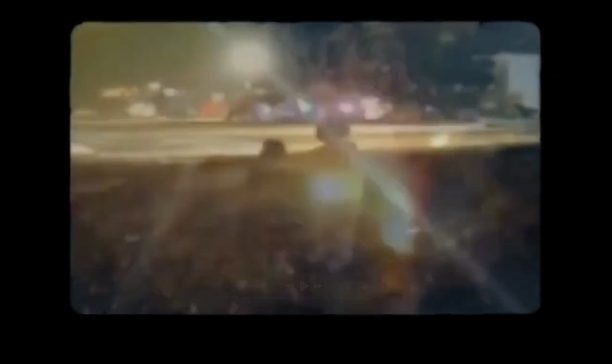
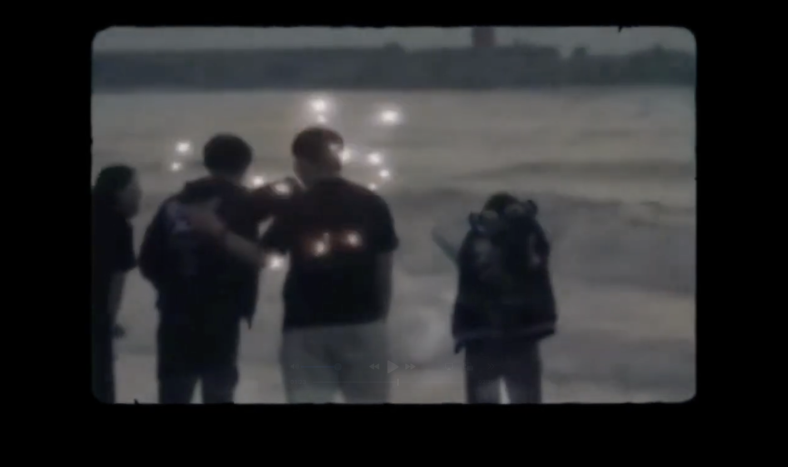
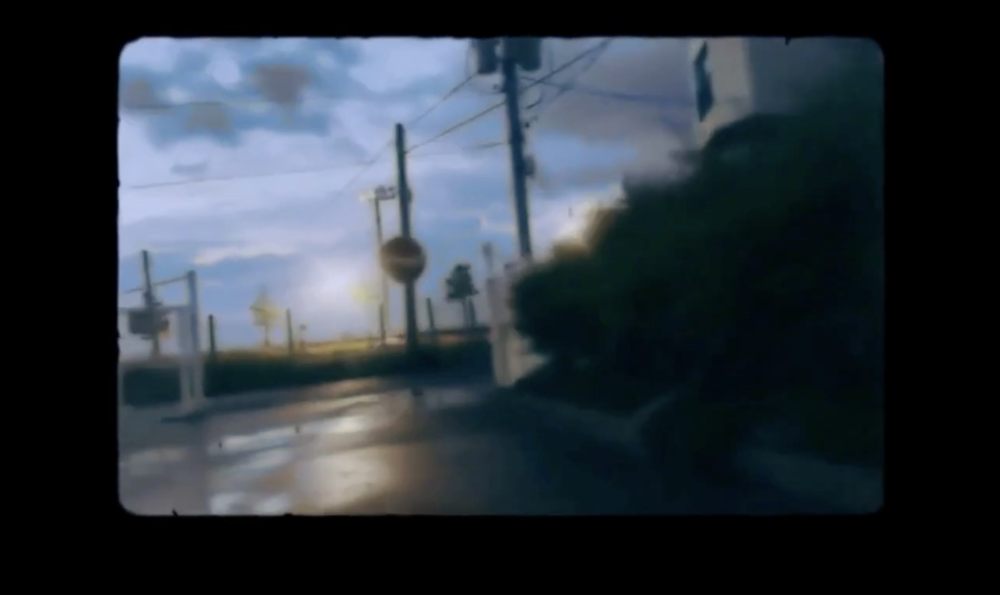

A RECORD
OF MEMORY.
학과 MT 이후, 학생들이 시간이 지난 뒤에도 당시의 감정과 분위기를 다시 떠올릴 수 있도록 행사 기록 영상을 제작했습니다.
별도의 촬영 기획 없이 학생들이 각자의 휴대폰으로 촬영한 영상을 수합해, 하나의 아카이브 영상으로 재구성했습니다.
03 / ARCHIVE FILM
흩어진 기록을
어떻게 하나의 기억으로 만들 것인가?
FULL FILM
ARCHIVE / MEMORY / ATMOSPHERE
01 / CONTEXT
학과 MT 이후, 학생들이 시간이 지난 뒤에도 당시의 감정과 분위기를 다시 떠올릴 수 있도록 행사 기록 영상을 제작했습니다.
별도의 촬영 기획 없이 학생들이 각자의 휴대폰으로 촬영한 영상을 수합해, 하나의 아카이브 영상으로 재구성했습니다.
02 / MATERIAL
원본 영상은 화질, 화면 비율, 카메라 움직임과 시점이 모두 제각각이었습니다.
하나의 영상으로 제작될 것을 전제로 촬영된 자료가 아니었기 때문에, 서사적으로 매끄럽게 연결하기 어려운 조건이었습니다.
이 불균질함을 숨기기보다, 영상의 시각적 성격으로 활용하는 방향을 선택했습니다.

01 / OVERLAP
서로 다른 장면을 겹쳐 기억이 중첩되는 듯한 인상을 만들었습니다.
03 / DIRECTION
낮은 화질을 보정하는 대신 의도적으로 더 낮추고, 전체 영상을 빈티지한 질감으로 통일했습니다.
중첩과 잔상 계열의 표현을 활용해 서로 다른 시점의 영상들을 하나의 감각적인 흐름으로 연결했습니다.
사건을 정확하게 설명하는 방식보다, 당시의 분위기와 감정을 다시 느끼게 하는 데 초점을 맞췄습니다.

02 / PEOPLE
인물을 선명한 기록 대상으로 보여주기보다, 시간이 지난 뒤 남는 잔상처럼 표현했습니다.
EDITING APPROACH
제각각 촬영된 휴대폰 영상
화질을 낮춰 질감을 통일
중첩과 잔상으로 장면 연결
사건보다 감정과 분위기에 집중

03 / ATMOSPHERE
인물뿐 아니라 장소와 시간의 분위기 자체가 기억의 일부로 남도록 구성했습니다.
04 / RESULT
완성 영상은 학과 인스타그램과 유튜브를 통해 공개되었습니다.
행사 내용을 시간순으로 기록하기보다, 당시의 감정과 분위기를 중심으로 한 아카이브 영상으로 제작했습니다.
이후 후배들이 해당 영상을 레퍼런스로 삼아 자체적으로 MT 영상을 제작했습니다.
BACK TO PROJECTS
VIEW ALL PROJECTS →